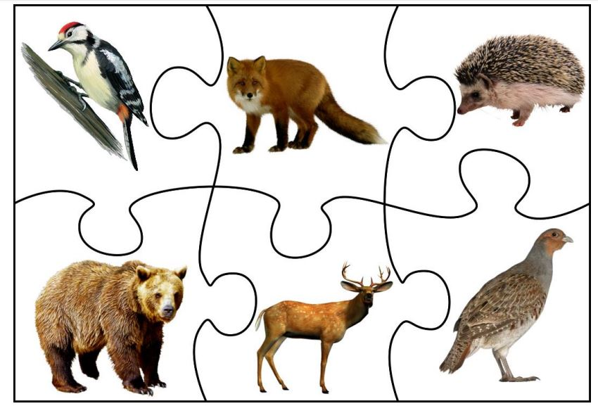

Цього тижня в нас надзвичайно приємна тема, адже дітям дуже подобаються тварини. Саме ці пухнастики стають їхніми першими друзями, витримують невмілі ласки малюків.
Вийдіть з учнями на прогулянку, пошукайте тварин, які вже прокинулися. Придивіться, що вони роблять, уявіть, що відчувають. Прислухайтеся до звуків природи: вони можуть багато розповісти про весняні турботи великих і маленьких тваринок.
Розкажіть дітям про те, що в природі не буває добрих і злих тварин — і лютий хижак, і найласкавіша тваринка однаково потрібні природі, просто ми не завжди вміємо це побачити.
Обговоріть із дітьми, що дружба з тваринами — це передусім велика відповідальність її господаря, адже "Ти завжди відповідальний за тих, кого приручив" (Антуан де Сент-Екзюпері).
Подивіться на ранок у лісі — послухайте лісовий хор (до с. 87 підручника)
Корисні завдання
“Свійські та дикі тварини” (с. 90 підручника)
Розгляньте малюнки тварин. Яких ви бачили в живу?
Родичі котиків та песиків (до с. 88 підручника)
Здивуйте учнів неочікуваними родичами звичних нам котиків і песиків